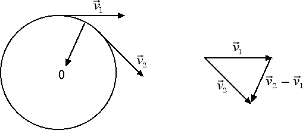

Moto circolare uniforme
Accelerazione centripeta
In generale sappiamo che l'accelerazione è una variazione di velocità divisa per l'intervallo di tempo in cui tale variazione avviene. In un moto circolare uniforme l'intensità del vettore velocità rimane costante nel tempo, potremmo perciò pensare che non ci sia alcun tipo di accelerazione. Invece non dobbiamo dimenticare che la velocità è un vettore ed è pertanto caratterizzata da un'intensità, da una direzione e da un verso.

Come emerge dalla figura riportata sopra, in un moto circolare uniforme la velocità è punto per punto tangente alla circonferenza, pertanto la velocità cambia ad ogni istante la sua direzione. È chiaro allora che ci deve essere un'accelerazione presente anche nel moto circolare uniforme. Tale accelerazione prende il nome di accelerazione centripeta. L'accelerazione centripeta è un vettore che ha la stessa direzione della differenza tra due vettori velocità valutati a due istanti di tempo diversi. Come emerge dalla figura, il vettore accelerazione centripeta risulta diretto verso il centro della circonferenza.
La velocità tangenziale cambia direzione tanto più rapidamente quanto maggiore è la velocità tangenziale v e quanto minore è il raggio r della circonferenza. In particolare l'intensità del vettore accelerazione centripeta è uguale a ac = v2 / r. La velocità tangenziale è legata alla velocità angolare ω dalla relazione v = ω · r, pertanto l'accelerazione centripeta può essere anche riscritta come ac = ω2 · r.